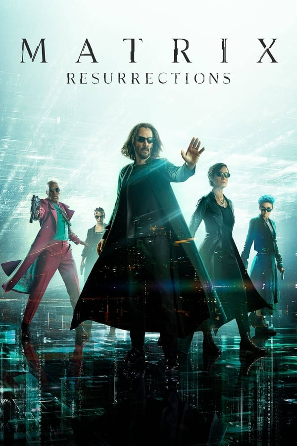
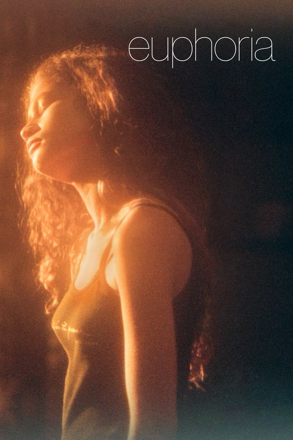

Dois anos se passaram desde que o tranquilo Peter Parker (Tobey Maguire) separou-se do grande amor de sua vida, Mary Jane Watson (Kirsten Dunst), e decidiu assumir o compromisso e a responsabilidade de seguir sendo o Homem-Aranha. Peter enfrenta novos desafios enquanto aprende a lidar com "seu dom e sua maldição", tentando desesperadamente harmonizar suas duas identidades: A do super-herói aracnídeo, o Homem-Aranha, e a do estudante universitário.





